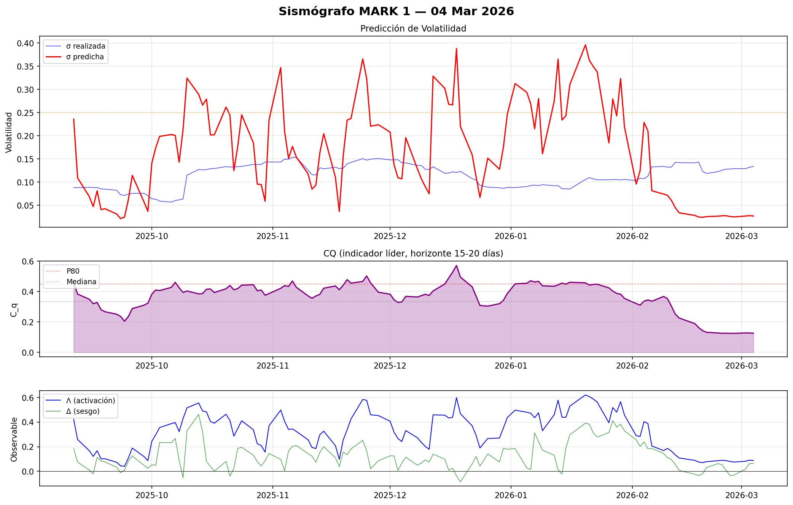

MARK 1

| Fecha | Estado | Cq | Λ | Δ | σ pred | σ real | γ(t) |
|---|---|---|---|---|---|---|---|
| 2026-03-04 | 🟢 | 0.1202 | 0.0877 | +0.0645 | 0.0269 | 0.1337 | 0.6154 |
| 2026-03-03 | 🟢 | 0.1216 | 0.0906 | +0.0628 | 0.0276 | 0.1321 | 0.7345 |
| 2026-03-02 | 🟢 | 0.1339 | 0.0816 | +0.0184 | 0.0268 | 0.1290 | 0.7496 |
| 2026-02-27 | 🟢 | 0.1280 | 0.0754 | -0.0319 | 0.0250 | 0.1289 | 0.7621 |
| 2026-02-26 | 🟢 | 0.1263 | 0.0802 | -0.0339 | 0.0258 | 0.1283 | 0.7391 |
| 2026-02-25 | 🟢 | 0.1293 | 0.0868 | +0.0079 | 0.0275 | 0.1279 | 0.7268 |
| 2026-02-24 | 🟢 | 0.1217 | 0.0894 | +0.0523 | 0.0274 | 0.1258 | 0.7420 |
| 2026-02-23 | 🟢 | 0.1199 | 0.0862 | +0.0632 | 0.0265 | 0.1226 | 0.7324 |
| 2026-02-20 | 🟢 | 0.1294 | 0.0783 | +0.0297 | 0.0257 | 0.1187 | 0.7588 |
| 2026-02-19 | 🟢 | 0.1302 | 0.0705 | -0.0208 | 0.0241 | 0.1230 | 0.6928 |
| 2026-02-18 | 🟢 | 0.1264 | 0.0752 | -0.0346 | 0.0248 | 0.1432 | 0.5315 |
| 2026-02-17 | 🟢 | 0.1315 | 0.0887 | -0.0236 | 0.0281 | 0.1416 | 0.5211 |
| 2026-02-13 | 🟢 | 0.1425 | 0.1084 | +0.0070 | 0.0338 | 0.1419 | 0.5524 |
| 2026-02-12 | 🟢 | 0.1835 | 0.1331 | +0.0569 | 0.0448 | 0.1428 | 0.5775 |
| 2026-02-11 | 🟢 | 0.2316 | 0.1652 | +0.0961 | 0.0607 | 0.1323 | 0.5788 |
| 2026-02-10 | 🟢 | 0.2570 | 0.1859 | +0.1105 | 0.0715 | 0.1324 | 0.5647 |
| 2026-02-09 | 🟢 | 0.3157 | 0.1686 | +0.1456 | 0.0743 | 0.1338 | 0.5443 |
| 2026-02-06 | 🟢 | 0.2723 | 0.2059 | +0.1857 | 0.0813 | 0.1329 | 0.6600 |
| 2026-02-05 | 🟡 | 0.4470 | 0.3886 | +0.1841 | 0.2104 | 0.1129 | 0.6886 |
| 2026-02-04 | 🟡 | 0.4765 | 0.4047 | +0.2393 | 0.2287 | 0.1076 | 0.6684 |
| 2026-02-03 | 🟢 | 0.3280 | 0.2838 | +0.2018 | 0.1250 | 0.1082 | 0.6303 |
| 2026-02-02 | 🟢 | 0.1597 | 0.2899 | +0.2559 | 0.0959 | 0.1034 | 0.6094 |
| 2026-01-30 | 🟢 | 0.3156 | 0.4567 | +0.3299 | 0.2184 | 0.1058 | 0.5186 |
| 2026-01-29 | 🟠 | 0.4057 | 0.5666 | +0.3830 | 0.3233 | 0.1047 | 0.4728 |
| 2026-01-28 | 🟢 | 0.3456 | 0.4813 | +0.3600 | 0.2428 | 0.1054 | 0.4784 |
| 2026-01-27 | 🟠 | 0.3795 | 0.5191 | +0.4123 | 0.2793 | 0.1055 | 0.4545 |
| 2026-01-26 | 🟢 | 0.3288 | 0.3955 | +0.3148 | 0.1844 | 0.1051 | 0.4401 |
| 2026-01-23 | 🟠 | 0.4556 | 0.5640 | +0.2790 | 0.3379 | 0.1049 | 0.4311 |
| 2026-01-22 | 🟠 | 0.4314 | 0.5884 | +0.3126 | 0.3493 | 0.1070 | 0.3817 |
| 2026-01-21 | 🟠 | 0.4224 | 0.6084 | +0.3832 | 0.3627 | 0.1095 | 0.4780 |